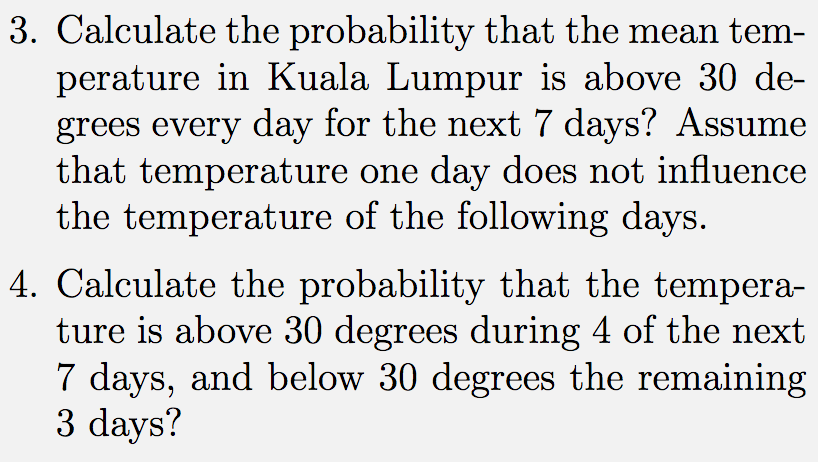
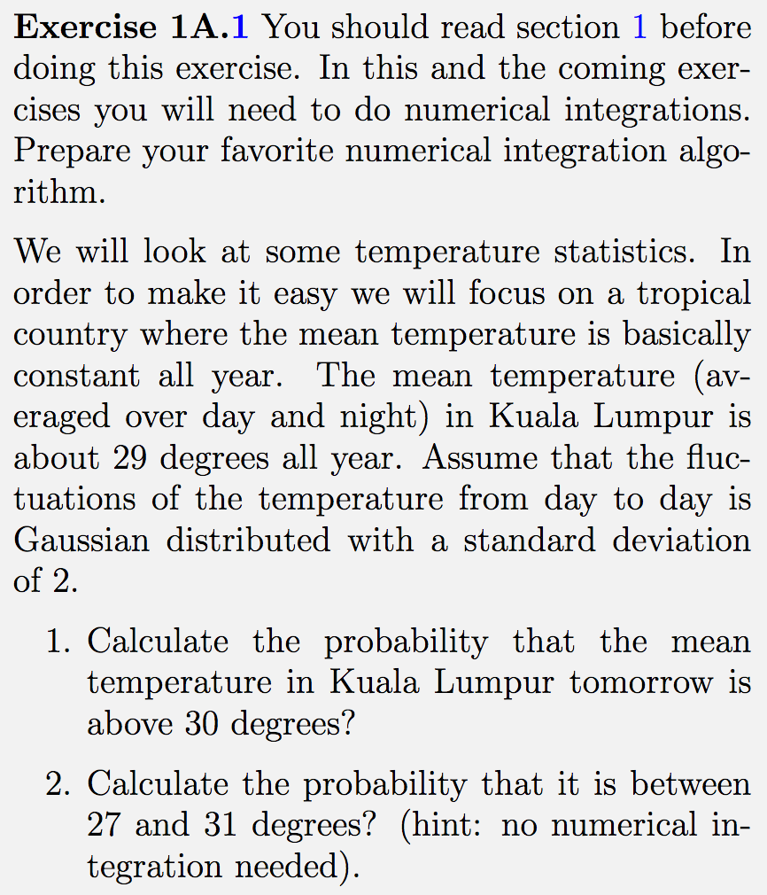
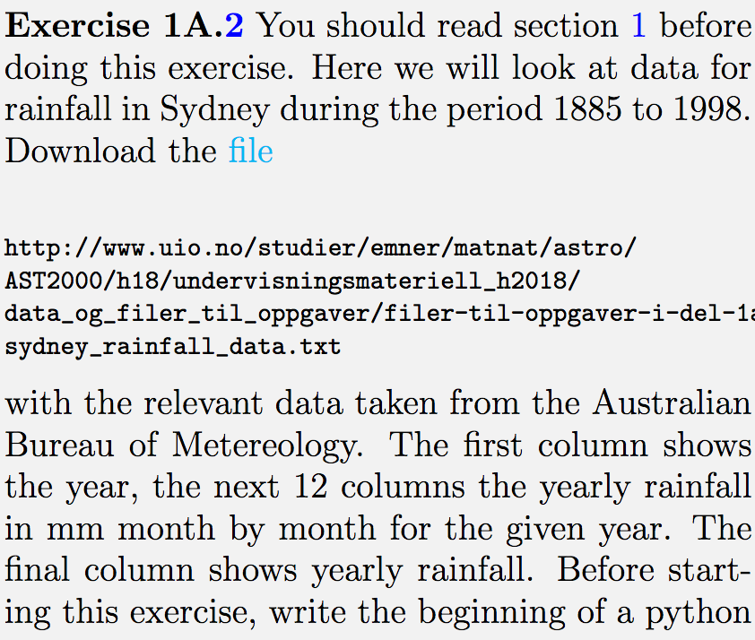
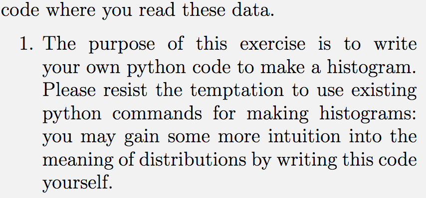
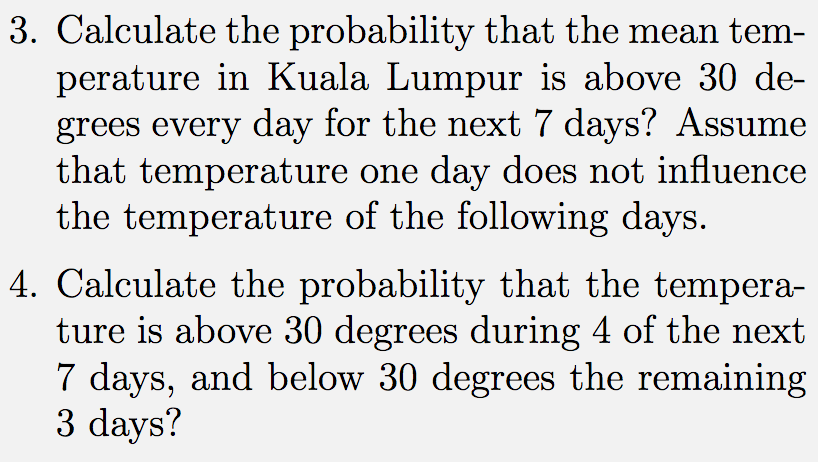
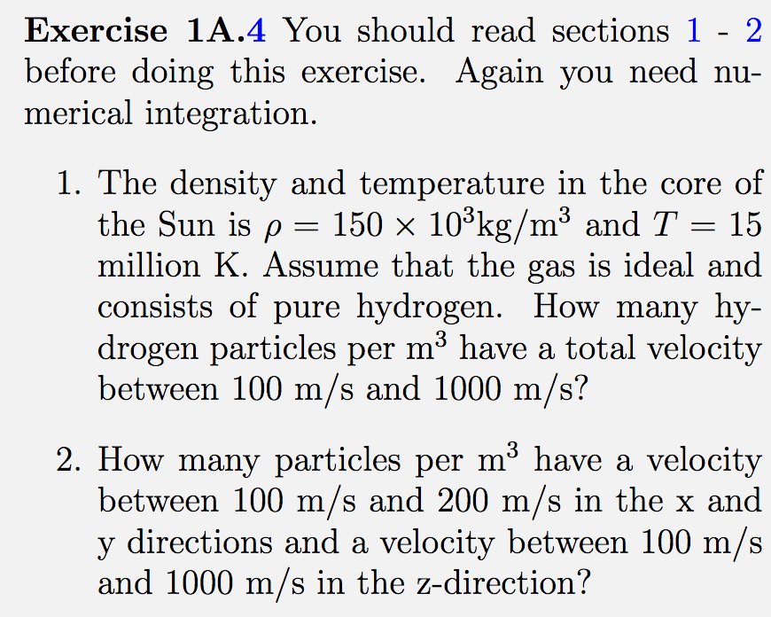
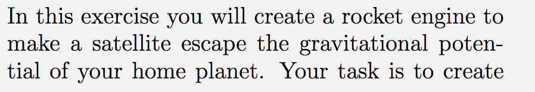
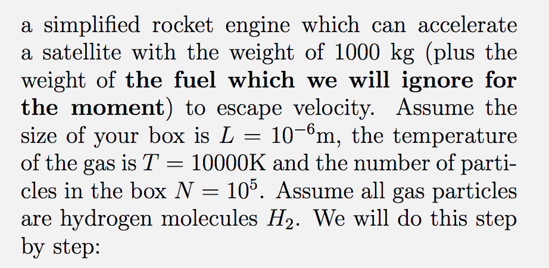
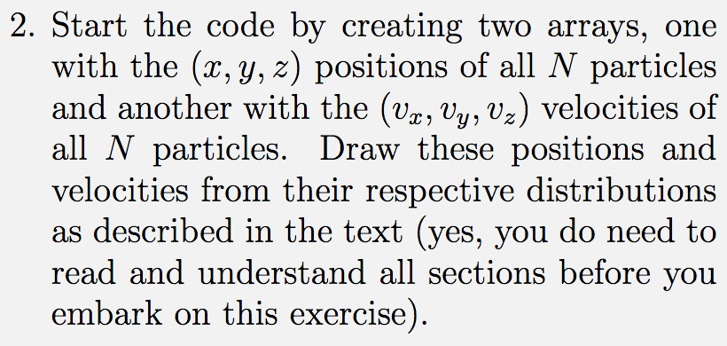

Forrige side🙂 🙁
La oss ta en titt på utdraget av resten av oppgave 1A.1:


Diskuter med medstudenter hvordan du kan løse disse oppgavene. For øyeblikket er det viktigste at du ser hvordan du skal gå frem for å løse dette. Neste side
Du må bruke presentasjonsmodus/fullskjermsvisning for å lese denne, men du skal ikke bruke frem/tilbake-knappene, KUN knappene som dukker opp på sliden for å ta deg videre! Ofte må du laste filen ned til maskinen din og åpne den der for å få til dette. Merk at noen knapper vil åpne nettskjema, videoer eller andre ressurser i internettbrowseren din. Når du gjør det riktig, skal du kun se en side av gangen, og når du trykker på knappene som dukker opp på skjermen så skal disse ta deg frem/tilbake i dokumentet. Du vil miste mye læringsutbytte hvis du ser flere slides av gangen. Får du det ikke til, spør foreleser/gruppelærer!
Trykk denne knappen for å begynne
Dette er en erstatning for forelesningen i emnet. Har du gått skikkelig gjennom disse interaktive forelesningsnotatene så trenger du ikke å lese de fulle forelesningsnotatene (med unntak av oppgavene bak). All informasjonen du trenger, får du her. Du kommer til å få mange grublespørsmål og diskusjonsoppgaver, det er meningen at disse skal gjøres i grupper av minst 2, maks 4 studenter. Det er defor sterkt anbefalt at dere sitter sammen i grupper når dere går gjennom disse interaktive forelesningsnotatene, du vil få betydelig mer utbytte av dem på den måten. En god ide kan være å bli enige om å treffes til den faste forelesningstiden og bruke forelesningslokalet som kommer til å være resevert til dette. Hvis du har kommentarer ris/ros til disse forelesningsnotatene eller til emnet, trykk på 🙂 🙁 knappen som du finner på alle sider.
Trykk denne knappen for å begynne
Forrige side
Velkommen til forelesning 2 i del 1A! Vi fortsetter nå der vi slapp med noen eksempler fra ukeoppgavene. Men før du setter igang, sjekk om du har kontroll på temaene fra første forelesning i del 1A:
Hva er Maxwell-Boltzmannfordelingen, hvilke varianter av den finnes, hva sier den oss og hvordan brukes den?
Hva sier bredden av Maxwell-Boltzmannfordelingen deg om gassen?
Hvordan finner du gjennomsnittet (middelverdien) til en tilfeldig størrelse hvis du kjenner sannsynlighetsfordelingen?
Hva er en Gaussfordeling og hva er sannsynligheten for å trekke en verdi innenfor 1σ, 2σ og 3σ fra gjennomsnittet?
Hva er standardavvik, varianse og FWHM?
Kun når du har full kontroll på alt dette kan du gå videre. Hvis ikke, gå tilbake til første forelesning for å reptere litt eller spør foreleser og/eller gruppelærer hvis det er ting som er uklare.
Er du klar? Neste side
Forrige side🙂 🙁

Tenk gjennom og diskuter hvordan du vil løse oppgavene. Du trenger ikke nødvendigvis løse de nå, men ha en klar ide om hvordan de kan løses... Når du har det kan du gå til Neste side
Forrige side🙂 🙁
Hvis du er usikker på hvordan oppgavene løses, så kan du få et par hint i denne videoen
. Her er neste utfordring: 

Tenk igjen nøye gjennom hvordan du vil gå frem å løse dette. Det er viktig at du diskuterer denne med medstudenter. Her får du ikke noe svar, hvis du er veldig usikker, spør gruppelærer! Neste side
Forrige side🙂 🙁
Vi gir oss ikke med utfordringer her. Nå skal du prøve å oppdage en svært viktig statistisk regel gjennom å tenke det frem til løsningen på denne utfordringen:
Hva iallverden har dette med astrofysikk å gjøre??? Anta at P(h) er sannsynlighetsfordelingen for kroppshøyden h til en person, anta også at P(IQ) er sannsynlighetsfordelingen for IQ til en person. Anta at disse er Gaussike fordelinger (noe som stemmer rimelig godt). Ved å bruke disse fordelingene, hvordan kunne du regne ut sannsynligheten for at en tilfeldig valgt person har både høyde og IQ over gjennomsnittet? (anta at det ikke er noen sammenheng mellom å være høy og å være intelligent). Hvis du kjenner en spesiell statistisk regel for å gjøre dette, glem den regelen nå og bruk kun logisk resonnement for å finne svaret.
På de neste sidene skal du få se hva dette har med astrofysikk å gjøre, men først, tror du svaret er:
0% 20% 25% 50%
60% 75% 90% 100%
Forrige side🙂 🙁
Det var nok ikke helt riktig! Trykk på tilbakeknappen og prøv igjen men ta med deg et hint på veien: anta at du har en gruppe på f.eks. 100 personer, hvor mange av disse har høyde over gjennomsnittet? Og hvor mange av disse har IQ over gjennomsnittet?
Forrige side🙂 🙁
HELT RIKTIG! Ta en kikk på denne videoen
nå for å lære en svært viktig regel for sannsynligheter og for å se hvordan du kan tenke for å komme frem til svaret på utfordringen. Ikke gå videre før du har forstått hva videoen prøver å forklare. Neste side
Forrige side🙂 🙁
Du lurere kanskje på hvorfor vi antar Gaussisk fordeling for så mange forskjellige tilfeldige størrelser, fra hastigheter, til høyde og IQ? Svaret ligger blant annet i
Sentralgrenseteoremet (central limit theorem) Anta at du har M sett av N uavhengige tilfeldige tall, dvs. du har M sett der hvert sett består at tilfeldige tall x1, x2, ..., xN som er trukket fra en nesten hvilken som helst foredelingsfunksjon, men alle tallene i alle M settene må være trukket fra den samme fordelingen. For hvert av de M settene, ta midlet over de N tallene i hvert sett og kall midlet aj (j = ). Gitt noen betingelser på fordelingsfunksjonen samt at N er stor nok, så kan man vise matematisk at fordelingen til aj vil være tilnærmet Gaussisk. Under noen betingelser vil dette til og med være riktig hvis x1, x2, ..., xN er trukket fra forskjellige fordelinger. Du trenger ikke kjenne til detaljene og vi skal ikke diskutere disse betingelsene i AST2000.
I veldig mange naturlige prosesser så tar man slike midler over mange tall implisitt, f.eks. hvis du måler temperaturen så tar du i realiteten midlet over temperaturene i løpet av et kort tidsrom. Dette gjør at mange tilfeldige tall fra naturlige og kompliserte prosesser har tilnærmet en enkel Gaussisk fordelingsfunksjon. Neste side
Forrige side🙂 🙁
Nå skal du øve deg på å bruke multiplikasjonsregelen for sannsynlighet. Vi begynner med gasser:
Maxwell-Boltzmannfordelingen for hastighetsvektor v⃗ Hvordan kan du finne sannsynlighetsfordelingen for at en tilfeldig partikkel i en gass har hastighetsvektor v⃗? Du kan bruke de kjente fordelingene for P(vx), P(vy) og P(vz) samt multiplikasjonsregelen til å vise at $$P(\vec{v}) = \left(\frac{m}{2\pi kT}\right)^{3/2}e^{-\frac{1}{2}\frac{mv^2}{kT}}$$ der v = |v⃗|.
Hvis du ikke ser hvordan det kan gjøres, ta en titt på denne videoen
. Neste side
Forrige side🙂 🙁
La oss ta en titt på utdraget av resten av oppgave 1A.1:

Diskuter med medstudenter hvordan du kan løse disse oppgavene. For øyeblikket er det viktigste at du ser hvordan du skal gå frem for å løse dette. Neste side
Forrige side🙂 🙁
Hvis du ikke så hvordan oppgaven på forrige side skulle løses, ta en titt på denne korte videoen
for litt hint.
Du har allerede brynet deg på den første deloppgaven av 1A.4. Ta en kikk nå på den andre:

Denne gangen får du ikke hjelp, spør gruppelærer hvis du er i tvil.
Neste side
Forrige side🙂 🙁
La oss nå gå tilbake til rakettmotoren vår i oppgave 1A6 (innleveringsoppgave). Utdrag fra oppgave 1A6:
 
Vi skal nå se på andre deloppgave:

Her kan du få bruk for random-klassen (link) i python. Spesielt bør du lese om random.seed, random.gauss og random.uniform. Er du enda usikker på hvordan du skal gjøre dette, så kan du få noen hint i denne videoen
Neste side
Forrige side🙂 🙁
Nå som vi vet hvordan lage gasspartiklene i rakettmotoren vår, så gjenstår noen få men svært viktige temaer før vi kan sette igang å bevege partiklene slik at det faktisk blir en virtuell gass. Vi kjenner nå hastighetene til partiklene våre, og mens partiklene ikke støter på noen vegg eller på andre partikler så forblir denne hastigheten uforandret. Dermed er det i første omgang ganske greit å bevege partiklene i løpet av et lite tidssteg. Men etterhvert kommer de til å kollidere, og det er da vi trenger antakelsen om ideel gass (litt forenklet):
det er ingen interaksjon mellom partiklene
kollisjonen med veggene er elastisk
De aller fleste gasser der temperaturen ikke er veldig høy eller veldig lav er gode tilnærmelser til ideele gasser. Men hva innebærer elastiske kollisjoner? Kan du huske det fra mekanikken? Tenk nøye gjennom det før du går videre! Neste side
Forrige side🙂 🙁
I en elastiske kollisjon, så er ... Trykk her
Det betyr at absoluttverdien av bevegelsesmengden ... Trykk her
Se på disse kollisjonene her mellom gasspartikler og vegg...
Hva skjer med bevegelsesmengdene px og py i x- og y-retning her hvis kollisjonene er ellastiske?
Når du vet svaret, gå til Neste side
La oss se på en partikkel som kolliderer med veggen på høyre side slik at hastigheten i x-retning bytter retning. Er du enig i at det i y-retning (opp-ned-retning) ikke virker noen krefter i denne kollisjonen? Trykk her når du er enig
Er du dermed enig i at bevegelsesmengde i y-retning, py, er uendret? Trykk her når du er enig
Er du også enig i at absoluttverdien av bevegelsesmengden i x-retning må være uendret pga. elastisk kollisjon? Trykk her når du er enig
Er du også enig i at fortegnet til bevegelsesmengde i x-retning er endret Trykk her når du er enig, ikke før!
Er du da også enig i at ... $$\begin{aligned} p_x\mathrm{(etter\ kollisjon)} &= \textcolor{red}{\textbf{-}} p_x\mathrm{(før\ kollisjon)}\\ p_y\mathrm{(etter\ kollisjon)} &= p_y\mathrm{(før\ kollisjon)}\end{aligned}$$ Hvis du er uenig i noe av det over, spør foreleser/gruppelærer Neste side
Forrige side🙂 🙁
Her ser vi situasjonen illustrert:

Neste side
Forrige side🙂 🙁
Kan du definere gasstrykk? Kikk på denne videoen for å se om den kan hjelpe deg med å finne en definisjon. Tenk deg om før du trykker på denne knappen
Kan det hjelpe deg litt med definisjonen? Tenk deg om igjen og trykker på denne knappen
Gasstrykk er ... Den totale kraften fra partiklene per areal, altså: $$P = \frac{F}{A}$$ der P er gasstrykk som måles i N/m2 også kalt Pa (Pascal).Neste side
Forrige side🙂 🙁
La oss se om vi kan finne et uttrykk for gasstrykket:
Kraft kan skrives som $$F = \frac{\Delta p}{\Delta t}$$ altså endring i bevegelsesmengde per tid. Hvilken endring Δp i bevegelsesmengde får en gasspartikkel med masse m og x-hastighet vx på veggen ved kollisjon (anta ideel gass og dermed elastisk kollisjon)?
|Δp| = mvx |Δp| = mvx2 |Δp| = 2mvx $|\Delta p| = \frac{1}{2}mv_x^2$ |Δp| = 4mvx
Forrige side🙂 🙁
Det var nok ikke helt riktig! Trykk på tilbakeknappen og prøv igjen men ta med deg et hint på veien: Endring i bevegelsesmengde er lik bevegelsesmengden etter minus bevegelsesmengde før, enig? Altså: Δp = p(etter) − p(før) Men hva er bevegelsesmengde før og etter kollisjon? (husk fortegn her!)
Forrige side🙂 🙁
HELT RIKTIG! Du har sikkert tenkt slik: Endring i bevegelsesmengde er lik bevegelsesmengden etter minus bevegelsesmengde før, enig? Altså: Δp = p(etter) − p(før) = − mvx − mvx = − 2mvx = − 2px Kraften som en partikkel utøver på veggen ved kollisjoner altså $$f = \frac{2p_x}{\Delta t}$$ Men hva skal vi bruke som tiden her??? For å komme videre slik at vi kan finne et uttrykk for gasstrykket så trenger vi denne. For å finne ut av dette og dermed kunne utlede gasstrykket, så skal vi se på et bittelite volum dV av gass rett ved en vegg. Vi antar at det lille volumet vårt har form som en sylinder eller som en rektangulær boks med lengde Δx og endesideflater med areal A.
På neste side skal vi se nærmere på boksen... Neste side
Forrige side🙂 🙁
Her er den:

Vi skal nå beregne den totale tiden det tar for alle partiklene i denne boksen å ha truffet veggen som ligger på høyre side av boksen. Først skal vi kun se på partiklene som har en gitt absoluttverdi vx av hastigheten. Du kan se disse partiklene i denne videoen. De røde partiklene er de med hastighet vx på vei mot veggen på høyre side, de blå partiklene har hastighet − vx og er på vei vekk fra veggen (dvs. de har allerede kollidert med veggen tidligere. Neste side
Forrige side🙂 🙁
Hvor lang tid tar det før alle de røde partiklene har truffet veggen? (husk Δx er lengden av boksen, vx er absoluttverdi av hastighetskomponent i x-retning som er lik for alle partikler og A er arealet av endesideflatene)
Se gjerne videoen igjen.
Δt = vxΔt $\Delta t = \frac{v_x}{A}$ $\Delta t = \frac{v_x}{\Delta x}$ $\Delta t = \frac{\Delta x}{v_x}$ Δt = 2vxΔx
Forrige side🙂 🙁
Det var nok ikke helt riktig! Trykk på tilbakeknappen og prøv igjen men ta med deg et hint på veien: Er du enig i at den røde partikkelen helt til venstre er den siste som treffer veggen? Den trenger å gå en avstand Δx i x-retning med en hastighet vx.
Forrige side🙂 🙁
HELT RIKTIG!
Når den røde partikkelen helt til venstre har truffet veggen, så har alle røde partikler truffet veggen. Partikkelen trenger å gå en avstand Δx i x-retning med en hastighet vx, dermed tar det den tid Δx/vx. Men vi må også se hvor lang tid de blå partiklene har brukt for å treffe veggen! Disse er på vei bort fra veggen og har dermed truffet veggen tidligere, men hvor lang tid tok det for alle de blå partiklene å treffe veggen? Kan du bruke samme type resonnement? Hvis du ikke ser det, trykk her for et tips
Hvor lang tid er det siden i det videoen starter? Ikke gå til neste side før du har svaret! Neste side
Forrige side🙂 🙁
Den blå ballen til venstre har beveget seg en strekning i negativ x-retning på Δx siden den traff veggen med hastighet vx, den traff dermed veggen en tid Δx/vx før videoen starter. Alle andre blå baller traff senere, altså kortere tid siden, fordi disse enda er nærmere veggen.
Konklusjonen vår er at alle ballene i boksen traff veggen i løpet av totalt tiden 2Δx/vx. Og de ’la igjen’ en bevegelsemengde N × 2px der N er antall partikler, Total kraft på veggen er dermed $$F = \frac{2Np_x}{2\Delta x/v_x} = \frac{Nv_xp_x}{\Delta x}$$ I denne videoen
tar vi dette uttrykkt videre og utleder trykkintegralet: $$P = \frac{1}{3}\int_0^\infty vp\;n(p)dp,$$ der v er hastigheten som tilsvarer bevegelsesmengden p (som er p = mv hvis ikke-relativistisk) og n(p) er fordelingsfunksjonen som sier hvor mange partikler per volum som har bevegelsesmengde i intervallet , for ideel gass tilsvarer dette Maxwell-Boltzmann. Neste side
Forrige side🙂 🙁
I deloppgave 2 i 1A.4 skal du analytisk integrere opp trykklintegralet for ideel gass med p = mv og n(p) som Maxwell-Boltzmann. Resultatet du får er svært viktig i termodynamikk:
Tilstandslikningen for ideel gass Tilstandslikningen (equation of state) til en gass er en sammenheng mellom trykk, temperatur og tetthet. For en ideel gass er denne: P = nkT der n er antalltettheten av gassen, altså totalt antall gasspartikler per volum, k er Boltzmannkonstanten og T er temperaturen til gassen.
Denne sammenhengen kommer vi til å bruke igjen og igjen, så lær den med en gang. Neste side
Forrige side🙂 🙁
Så tilbake til rakettmotoren vår. Nå har vi alt vi trenger. Du har allerede laget partiklene med posisjoner og hastigheter, da må du
bevege hver partikkel fremover i hvert tidssteg
sjekke om du treffer en vegg
nå har du sett hva du kan gjøre når du får en ellastisk kollisjon
sjekk om du treffer hullet i boksen, da går partikkelen ut, men du må få en ny partikkel inn i boksen igjen for å passe på å holde tetthet og temperatur konstant.
beregne rakettens akselrasjon for hver partikkel som går ut av hullet
Siden vi holder temperatur og tetthet i boksen konstant, kan du beregne rakettens akselrasjon for et veldig kort tidsrom, og så bruke denne akseprasjonen videre i beregningene. Du trenger dermed kun å simulere boksen for et kort tidsrom for å finne ut hvor mye akselrasjon raketten får per tid. Merk at boksen også er alt for liten til å drive en hel rakett, du trenger et meget stort antall slike bokser, du trenger altså å gange opp akselrasjonen fra en boks med antall bokser. Neste side
Forrige side🙂 🙁
I oppgaven skal du få raketten opp i unnslippingshastighet (escape velocity). Men hva er unnslippingshastighet? Det er hastigheten der rakettens kinetiske energi er større en jordas potensielle slik at den ikke lenger faller tilbake til jorda. Ser du hvordan du kan beregne den?Trykk her når du har tenkt!
Svaret du skal få er $$v_\mathrm{esc}=\sqrt{\frac{2GM}{R}}$$ der R er avstanden fra jordas sentrum der hastigheten når vesc og M er jordas masse. Fikk du det? Hvis ikke, spør foreleser/gruppelærer! Neste side
Forrige side🙂 🙁
Men hva gjør du hvis koden ikke funker som den skal?
Hva hvis den gir rare resultater for fremdrift, trykk, energi etc.? Hva gjør du da? Kikker gjennom koden noen ganger for å se om jeg ser noe feil Bruker litt grunnleggende fysikk for å finne hvor feilen ligger
Forrige side🙂 🙁
Lykke til! Det kan du trenge, for dette kan ta laaaaaaaaaaaaaang tid!
Trykk her for noen tips til hvodan dette kan ta mye kortere tid
Forrige side🙂 🙁
Det er veldig lurt å lære noen tips til hvordan du kan bruke litt fysikk til å debugge en kode. Her er noen tips hvis gassboksen og/eller rakettmotoren ikke gir de resultater som du forventer. Vi begynner med gassboks uten hull.
lag histogram av hastigheten til partiklene og plott Maxwell-Boltzmann over, stemmer det sånn omtrent?
Hvordan vil hastighetskomponentene til partiklene se ut som funksjon av tiden? Det vet du med litt fysikk. Velg deg ut en av partiklene i gassen og lag 3 lister med vx, vy og vz-komponenten i hvert tidssteg gjennom hele simuleringen. Plott disse. Er de slik som de skal være?
Hvis ikke, hvor begynner hastighetskomponenten(e) å oppføre seg rart? Er det f.eks. etter første kollisjon med vegg? Hva er det ellers som kan endre hastighetskomponentene?
Hvis alt stemmer med hastighetskomponentene, lag 3 lister med x, y og z-posisjonene for en valgt partikkel for alle tidssteg. Plot posisjonene som funksjon av tiden. Er posisjonene slik du forventer? Er posisjonsendringer ved veggtreff synkronisert med hastighetsendringer? Går posisjonene utenfor boksen?
Forrige side🙂 🙁
Og det bringer oss tilbake til spørsmålet vi hadde helt i starten!
Hvor mye bevegelsesmengde slipper ut av hullet for hver partikkel som slipper ut?
Hvordan kan den bevegelsesmengden som slipper ut hjelpe deg til å finne rakettens akselrasjon? (finnes det en sammenheng mellom kraft og endring i bevegelsesmengde?)
Pass på retningen til bevegelsesmengden for hver partikkel som kommer ut og retningen til raketten.
Når du har akselrasjonen, hvordan går du så frem for å finne rakettens posisjon som funksjon av tid etter oppskyting?
Svarene får du ikke her! Hvis du ikke finner ut av det, få hjelp på gruppene! Neste side
Forrige side🙂 🙁
Hvis nå motoren uten hull gir fornuftig trykk, midlere partikkelenergi etc., da kan vi sjekke motoren med hull: hvis du får for lite/for mye fremdrift eller ingen i det hele tatt, så kan du f.eks.
lage histogram av x,y og z-komponentene for alle partikkelposisjonene og hastighetene i første og siste tidssteg. Er hastightene enda omtrent Maxwell-boltzmann fordelt? Kan være litt avvik her avhengig av hvordan du regenererer partikler, men hvis du har veldig mange partikler med veldig liten/stor hastighet, så er noe galt med måten du gir hastighet til de nye partiklene som erstatter de som forsvinner ut. Er posisjonene enda uniformt fordelt? Hvis ikke er noe galt med måten du gir posisjon/hastighet til nygenererte partikler.
slipper noen/nok/for mange partikler ut av hullet? Kan det være en feil i hvordan du sjekker om partiklene slipper ut av hullet? Etter å ha generert partikkelposisjoner og hastigheter helt i starten, forandre posisjon og hastighet til en valgt partikkel slik at den står rett ved utgangen av hullet med hastighet ut av hullet. Sjekk så om partikkelen med dette indeksnummeret faktisk slipper ut av boksen. Hvis ikke: lag lister med posisjoner/hastigheter i alle tidssteg og sjekk hva som skjer mens den egentlig skulle slippe ut av hullet (som på forrige side). Er betingelsen din for at den har gått ut av hullet faktisk blitt oppfylt?Neste side
Forrige side🙂 🙁
Gratulerer, du er ferdig med Del 1A av AST2000. Dette bør du nå kunne svare på før du går videre:
Hva er, og hvordan bruker man, en statistisk fordelingsfunksjon? (eller sannsynlighetstetthet)
Hva er, og hvordan beregner man, gjennomsnitt, standardavvik, varianse, FWHM?
Hva er en Gaussisk sannsynlighetsfordeling og hva er sannsynligheten for å trekke en verdi innenfor 1σ, 2σ og 3σ fra gjennomsnittet?
Hva er en ideel gass?
Hvordan kan du finne fordelingen av partikkelhastigheter i en ideel gass?
Hva er trykk, hvordan kan du beregne trykk analytisk og numerisk og hva er tilstandslikning for ideel gass?
Hva gjør at en rakett akselererer?
Hvordan går du frem for å beregne egenskapene en gass trenger i en rakettmotor for å få en gitt akselrasjon?